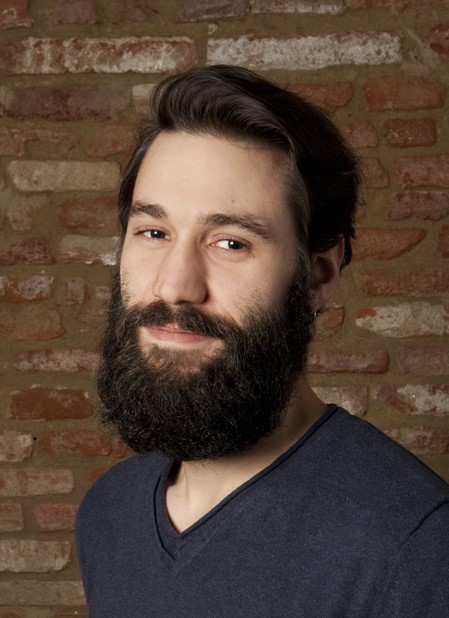

Blandine Descamps
“I'm good at understanding the big picture and I can help to build the good solution with the right tools.
I like to work in a "user first" mindset.”
I'm skilled in javascript and I've previously worked with Angular, Ember and other MVC frameworks. I know HTML5 and CSS3.
I do write tests :)
I like also to keep myself at the edge of the front-end technologies. Those days, I play with Angular 2, web components, and angular material design libraries.
I'm also interested in new tools to improve the user feedback like AB testing.
I'm fluent in english and french, could work in spanish with a bit of training, and I'm learning swedish.
Some of my projects are available on github.
And you can know more about me on linkedin.
Nicolas Medda
"I'm good at understanding the big picture and I can help to build the good solution with the right tools. I like to work in a "user first" mindset."

I'm skilled in javascript and I've previously worked with Angular, Ember and other MVC frameworks.
I know HTML5 and CSS3.
I do write tests :)
I like also to keep myself at the edge of the front-end technologies. Those days, I play with Angular 2, web components, and angular material design libraries.
I'm also interested in new tools to improve the user feedback like AB testing.
I'm fluent in english and french, and I'm learning swedish.
Some of my projects are available on github.
And you can know more about me on linkedin.